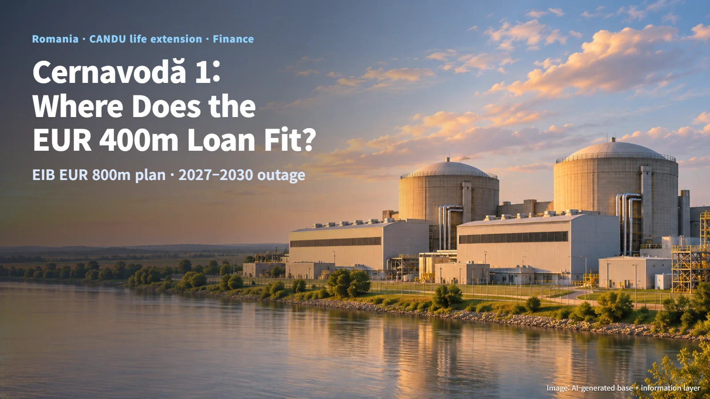
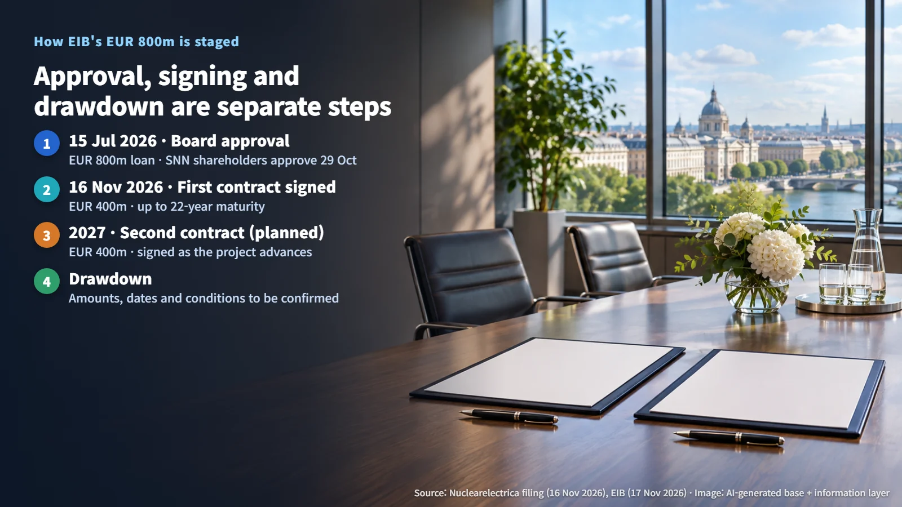
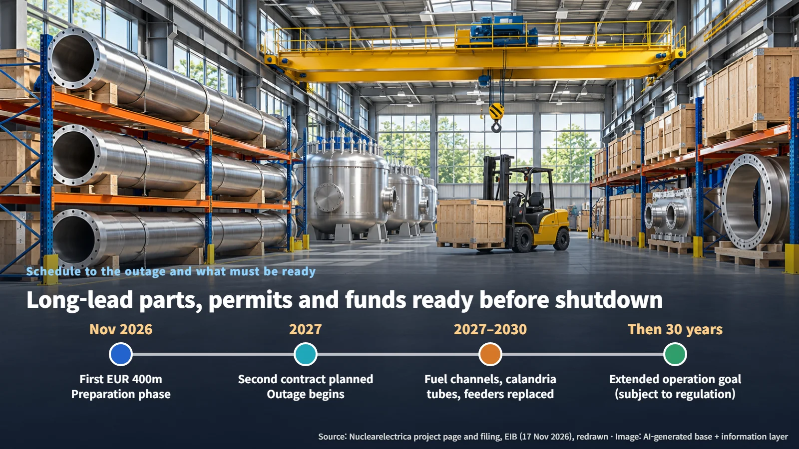

Romania · CANDU life extension · Finance
Cernavodă 1 Refurbishment: Where the First EUR 400 Million EIB Loan Fits in an EUR 800 Million Plan
Nuclearelectrica signed the first EUR 400 million of a planned EUR 800 million EIB loan for the Cernavodă Unit 1 refurbishment, ahead of a 2027-2030 outage.
A headline about a EUR 400 million loan for a nuclear refurbishment can sound like the money is in place and construction is about to begin. Large nuclear projects are financed in steps, though. A bank approves, the parties sign, and funds are drawn down over time, while equipment manufacturing, licensing and site work move forward alongside.
Romania's state nuclear operator Nuclearelectrica (SNN) reported that on 16 November 2026 it signed a EUR 400 million finance contract with the European Investment Bank (EIB) for the refurbishment of Unit 1 at the Cernavodă nuclear power plant. The EIB announced the agreement the following day, 17 November. This post looks at where that contract sits in the wider project, and what else has to come together before the unit shuts down for its refurbishment outage.
An earlier post on Cernavodă looked at the plant's grid reconnection conditions after a river-level event. This one turns to the life-extension project for Unit 1 and the money behind it.

Approval, Signature, Second Contract: How EUR 800 Million Is Sequenced
The EIB plans to provide EUR 800 million in total. That amount is split into two contracts of EUR 400 million each, signed in step with the project's progress. The public record so far looks like this:
| Step | Date | Amount | Status | |---|---|---|---| | EIB Board approval of the loan | 15 July 2026 | EUR 800 million | Approved | | SNN shareholder approval (Resolution No. 9) | 29 October 2026 | Acceptance of the financing | Approved | | First contract signed | 16 November 2026 | EUR 400 million | Signed | | Second contract | 2027 | EUR 400 million | Planned | | Disbursement | Per contract terms | Amounts and dates not yet published | To be tracked |
(Source: adapted from Nuclearelectrica current report, 16 Nov 2026, and EIB press release, 17 Nov 2026)
Each step is a different decision: the bank sets how much it will lend, the borrower agrees to accept it, both sides bind themselves to specific terms, and cash flows once conditions are met.

With the 16 November signature, half of the planned EUR 800 million is now under contract, which is what the EIB's press release title refers to when it says the bank "unlocks half" of the planned financing. The published term is a maturity of up to 22 years. Interest rate, fees, conditions precedent to drawdown, grace period, and actual amounts and dates of disbursement were not included in the announcements; those are the next items to look for in the contract and drawdown records. The project now stands at half of the EIB financing signed, with the second half scheduled for 2027.
The 2027–2030 Outage and What Must Be Ready Before It
The refurbishment aims to let Unit 1 operate for an additional 30 years, subject to meeting regulatory requirements. The scope covers replacement of major reactor components, system upgrades and related construction.
Cernavodă 1 is a CANDU (CANada Deuterium Uranium) reactor. In a CANDU, heavy water moderator fills a large cylindrical tank called the calandria, and fuel sits inside many horizontal tubes running through that tank. The tubes holding the fuel are the fuel channels; the tubes that surround them and pass through the tank are the calandria tubes; and the pipes linking each channel to the cooling system are the feeders. These components age over decades of operation, so a life-extension project replaces them. The source documents call this work retubing, and it is planned together with performance and safety upgrades. The same reactor type's life extension also came up in an earlier post on the major component replacement at Bruce Unit 5 in Canada.
The schedule appears slightly differently depending on the document:
| Source | Schedule stated | |---|---| | Earlier financing review documents | 2027–2029 | | EIB public announcement | Start in 2027, three years of works | | SNN's latest disclosure and current project page | Outage and refurbishment execution 2027–2030 |
(Source: adapted from EIB press release, 17 Nov 2026, and Nuclearelectrica project page)
The differences reflect when each document was prepared. Plans have been updated as the project advanced, and the most recent reference is 2027–2030, as given in SNN's latest disclosure and current project page.
Until the outage begins, SNN is working through the preparation phase: engineering, procurement of long-lead equipment, licensing, financing and infrastructure. According to SNN, a framework project management contract, an engineering and replacement-component supply contract, and an engineering, procurement and construction (EPC) contract are already in place, and the civil works for the required site infrastructure are under way.

The core challenge is sequencing. Once the reactor shuts down, it stops generating electricity, so the replacement tubes and equipment need to be manufactured, inspected and delivered to site, the buildings and facilities supporting the work need to be ready, and the necessary permits and fund disbursements need to line up with that moment. This finance contract advances one of those four strands; the outage can begin when all of them come together.
What to Watch Next: Drawdown Terms, the Second Contract, Regulatory Conditions
Three indicators will show how the project is progressing.
First, the drawdown terms and actual disbursements under the first contract, which will show how closely financing tracks the work schedule.
Second, the second EUR 400 million contract planned for 2027. Its signing date, terms and the work it will fund are the next things to confirm. As contracts with ECAs, commercial banks and international financial institutions are signed, they will also fill in the remaining roughly EUR 2.3 billion.
Third, regulatory conditions. The 30 additional years of operation are a target that depends on meeting regulatory requirements. The lender's loan approval and the reviews and inspections related to plant operation are handled by different bodies, using different records. Unit 1 returns to service once both the works and the regulatory conditions are complete.
In nuclear refurbishment news, the headline figure draws the eye first. Asking whether that figure reflects an approval, a signature or a disbursement makes the project's actual position much clearer. The next milestones here are the second contract signature and the start of the outage, both in 2027.